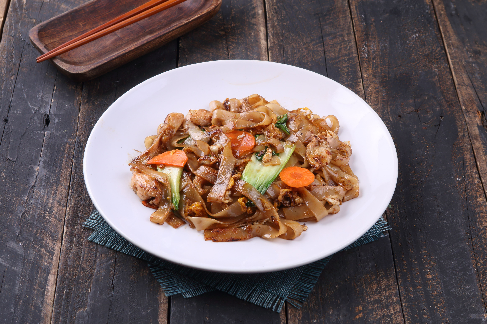

Char Kuey Teow

About the dish
Char kuey teow is stir-fried flat rice noodles. The name originated from Hokkien. It's especially famous in Penang, where many stalls compete for the best plate.
The noodles are smoky, savoury and a little sweet, with a bit of spiciness. The smoky taste is comes from cooking in a very hot wok over a strong flame.
Eat it hot with a fork and spoon.
Fun fact: Cooks work fast over a high flame because that smoky wok hei smell is seen as the sign of a good plate.
Ingredients
- Flat rice noodles
- Prawns and cockles
- Egg and bean sprouts
- Chives
- Soy sauce and a little chilli paste